0. 시작 전에
이 실습이 하는 일
파이썬(정확히는 pandas 라이브러리)으로 설문 데이터 한 개를 열어 보고, 그 안에 무엇이 들어 있는지 기초통계량으로 요약하는 연습입니다. 프로그래밍 경험이 전혀 없다고 가정합니다. 오늘 1차시의 목표는 딱 세 가지입니다.
기본 용어 여섯 가지
| 용어 | 뜻 |
|---|---|
| VS Code | 코드를 쓰고 실행하는 프로그램(편집기). 이 안에서 노트북 파일을 열고 터미널도 띄웁니다 |
| 노트북(.ipynb) | 코드를 셀이라는 칸 단위로 나눠 실행하고, 결과가 바로 아래에 붙어 나오는 파일. 오늘 모든 코드는 노트북 셀에 입력합니다 |
| 셀 실행 | 셀 안에 커서를 두고 Shift+Enter. 셀이 실행되고 다음 셀로 넘어갑니다 |
| pandas | 표 형태 데이터를 다루는 파이썬 라이브러리. 코드에서는 pd라는 짧은 이름으로 부릅니다 |
| 데이터프레임(df) | pandas가 CSV를 읽어 만든 표. 행(row) = 응답자 한 명, 열(column) = 변수 하나. 코드에서는 df라는 이름에 담습니다 |
| 결측값(NaN) | 응답이 없어 비어 있는 칸. 화면에는 NaN으로 표시되고, 통계량을 계산할 때 자동으로 제외됩니다 |
두 개의 입력 칸을 구분하세요
이 매뉴얼의 입력 상자는 세 가지 색입니다. 왼쪽 선이 파란 것은 노트북 셀, 회색인 것은 터미널에 입력합니다. 초록색은 실행 결과이니 입력하지 않고 내 화면과 비교만 하면 됩니다. 터미널 명령을 노트북 셀에 넣거나 그 반대로 하면 동작하지 않습니다.
(예) df.describe()
(예) python -m pip install pandas
(예) (10759, 47)
1. 환경설정
순서는 Python 설치 → VS Code 설치 → VS Code 확장(Python · Jupyter) 설치 → pandas 설치 → 작업 폴더와 노트북 만들기입니다. 이미 되어 있는 항목은 확인 명령만 돌려 보고 넘어가면 됩니다.
1-1. Python 설치
- https://www.python.org/downloads/ 에서 Python 3.12 (3.9 이상이면 됨) 내려받기 — 구글에
python install을 검색해 첫 결과 Download Python - Python.org를 눌러도 됩니다 - 설치 첫 화면에서 "Add python.exe to PATH" 체크 → Install Now
- 확인: 시작 메뉴에서 PowerShell을 열고 아래 입력
python --version
Python 3.12.x 처럼 버전이 나오면 성공입니다. "python을 찾을 수 없습니다"가 나오면 PATH 체크를 빠뜨린 것이니 다시 설치하세요.
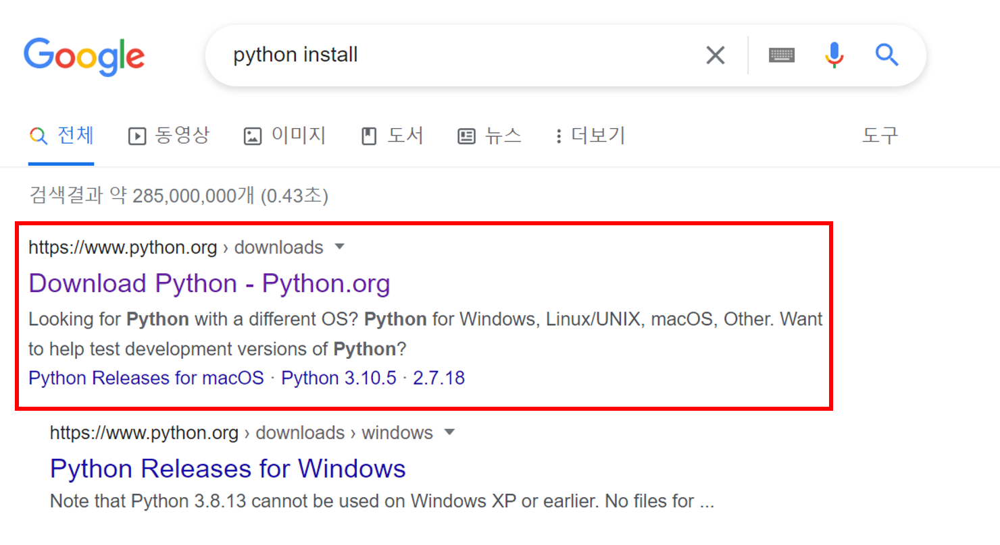
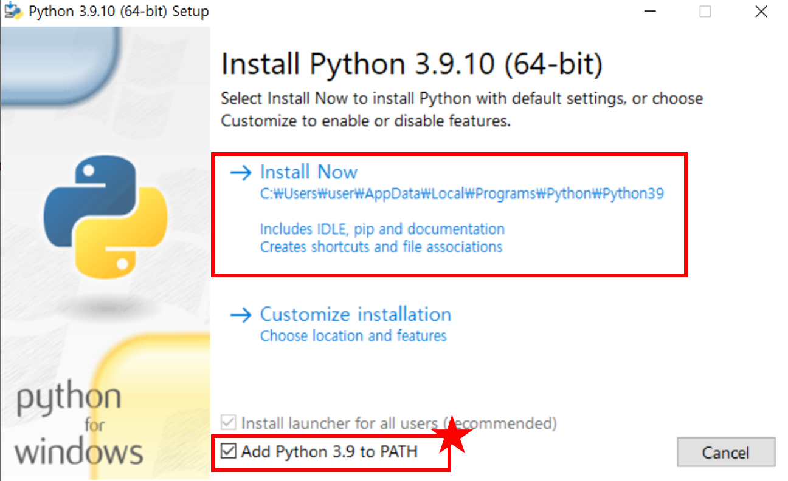
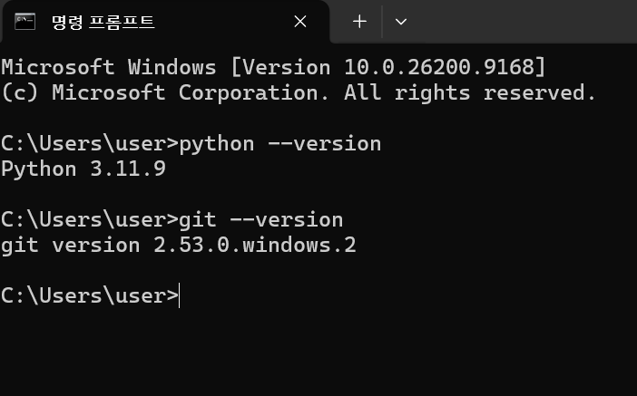
python --version 확인 — 버전이 나오면 성공 (git --version은 이 실습에서는 필요 없음)1-2. VS Code 설치
코드를 쓰고 실행하는 편집기입니다. 노트북 파일(.ipynb)을 열고, 셀을 실행하고, 필요하면 터미널도 같은 창 안에서 띄울 수 있어 이 실습의 기본 작업 공간이 됩니다.
- https://code.visualstudio.com/ 에서 내려받아 설치합니다 (설치 중 "PATH에 추가", "탐색기 상황에 맞는 메뉴에 'Code로 열기' 추가"는 체크해 두면 편합니다)
- 첫 실행 시 "Welcome to VS Code — Sign in to use GitHub Copilot" 화면은 오른쪽 아래 Continue without Signing In으로 건너뜁니다 (로그인 불필요)
- 한국어 메뉴: 왼쪽 확장(Extensions) 아이콘 → 검색창에
한국어→ Korean Language Pack for Visual Studio Code(Microsoft) Install → 오른쪽 아래 "Change Language and Restart" 클릭 - 밝은 테마(교육장 빔프로젝터에서 잘 보이게): 왼쪽 아래 톱니바퀴 → 테마 → 색 테마 →
2026 밝게또는Light Modern선택
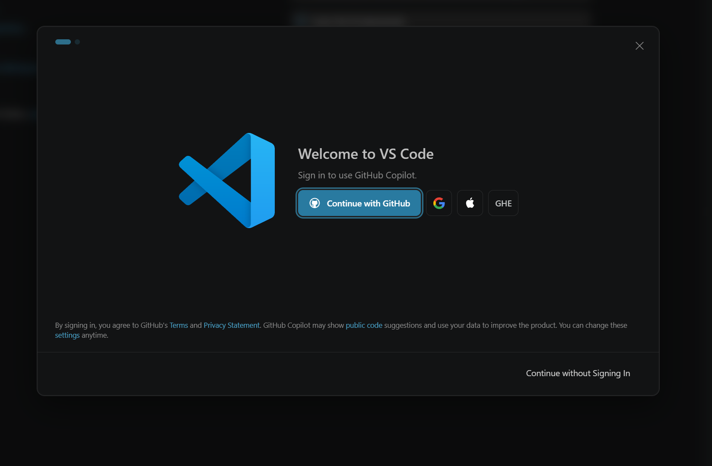
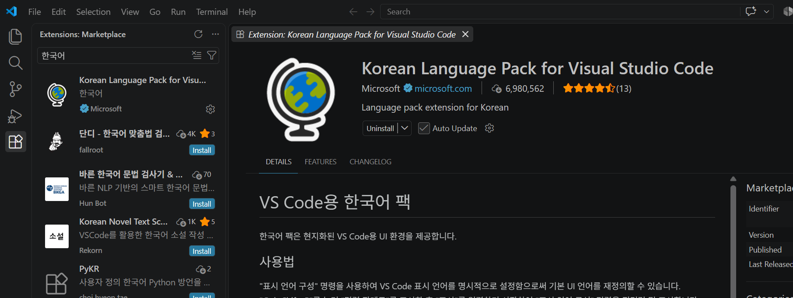
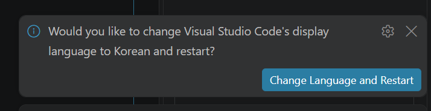
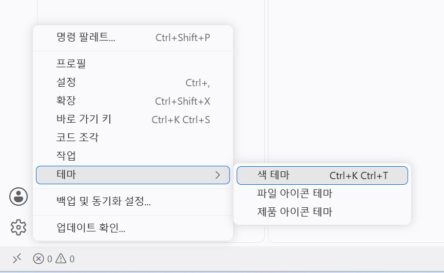
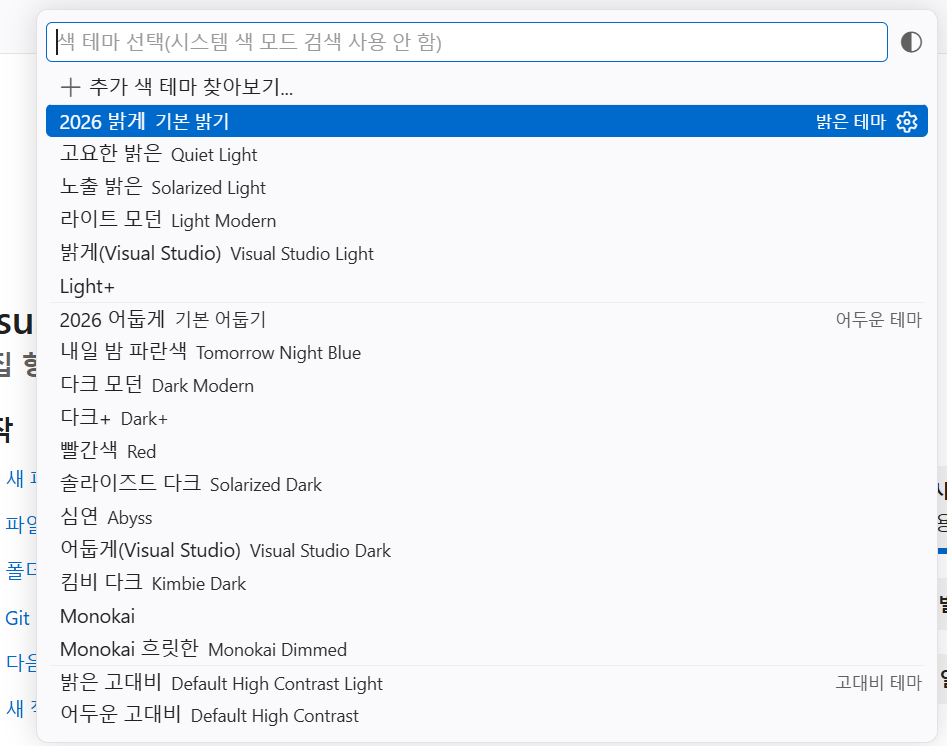
1-3. VS Code 확장 설치 — Python · Jupyter
VS Code는 처음엔 파이썬을 모릅니다. 확장(Extensions) 두 개를 설치해야 파이썬 코드를 알아보고(Python), 노트북 셀을 실행할 수 있습니다(Jupyter). 확장 화면은 왼쪽 세로 아이콘 중 네모 네 개 모양, 또는 Ctrl+Shift+X로 엽니다.
1-3-a. Python 확장
- 확장 검색창에
python을 입력합니다 - 목록 맨 위 Python(제작자 Microsoft, 파란 체크 표시) 옆의 설치(Install)를 클릭합니다
- 설치가 끝나면 Pylance·Python Debugger·Python Environments가 함께 설치됩니다 (그림 03-a처럼 네 개가 보이면 정상). 따로 설치할 필요 없습니다
- Pylance를 클릭해 보면 그림 03-b처럼 "사용 안 함"·"제거" 버튼이 보입니다 — 이미 설치되어 있다는 뜻이니 누르지 마세요
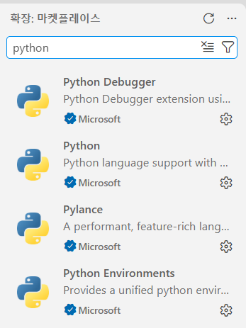
python 입력 — Python을 설치하면 Debugger · Pylance · Environments가 함께 설치됨 (모두 Microsoft)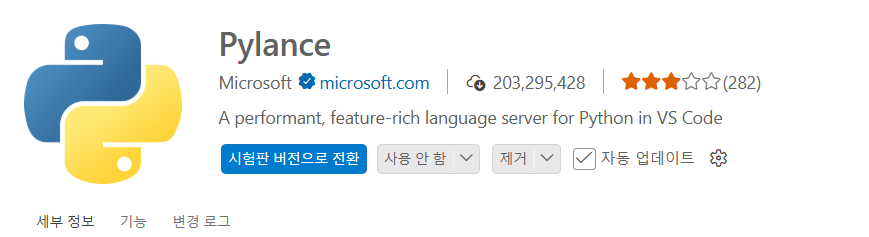
1-3-b. Jupyter 확장
- 확장 검색창을 지우고
jupyter를 입력합니다 - 목록 맨 위 Jupyter(Microsoft, "Jupyter notebook support, interactive programming…")의 설치를 클릭합니다
- 설치가 끝나면 Jupyter Keymap · Jupyter Notebook Renderers · Jupyter Cell Tags · Jupyter Slide Show가 함께 설치됩니다. 그림 03-c에서 Jupyter 아이콘에 붙은 숫자 4가 "함께 설치된 확장 4개"라는 뜻입니다
- Jupyter를 클릭해 상세 화면(그림 03-d)에 "사용 안 함"·"제거"가 보이면 완료입니다
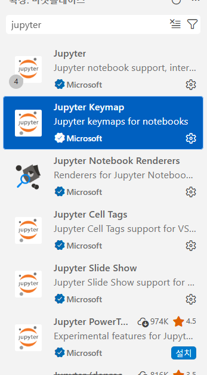
jupyter 입력 — Jupyter를 설치하면 Keymap · Renderers · Cell Tags · Slide Show 4개가 함께 설치됨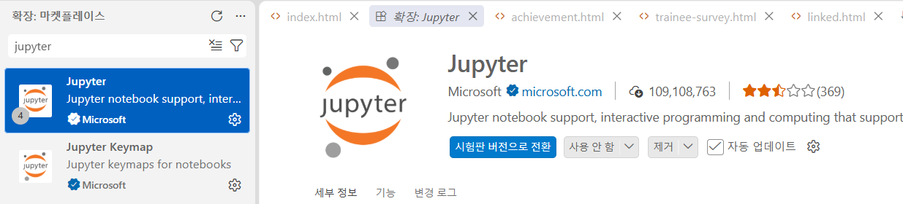
같은 이름의 확장이 여러 개 보여도 제작자가 Microsoft이고 파란 체크가 있는 것만 설치하면 됩니다. "Jupyter PowerToys"처럼 실험적 기능이 붙은 확장은 필요 없습니다.
1-4. pandas 설치
pandas는 파이썬에 기본으로 들어 있지 않아 한 번 설치해야 합니다. VS Code 안에서 메뉴 터미널 → 새 터미널(Ctrl+`)을 열고 아래를 입력합니다. 시작 메뉴의 PowerShell에서 해도 똑같습니다.
python -m pip install pandas
글자가 한참 올라간 뒤 Successfully installed pandas-2.x.x numpy-...가 나오면 됩니다. 이미 설치되어 있으면 Requirement already satisfied가 나오는데 이것도 정상입니다. 노란 [notice] A new release of pip is available은 오류가 아니니 무시하세요.
확인:
python -c "import pandas; print(pandas.__version__)"
2.3.3
버전 숫자는 달라도 됩니다. 숫자 대신 ModuleNotFoundError: No module named 'pandas'가 나오면 설치가 안 된 것이니 위 설치 명령을 다시 실행하세요.
1-5. 작업 폴더와 노트북 만들기
파일 경로 때문에 막히는 일이 가장 많습니다. 데이터 파일과 노트북 파일을 같은 폴더에 두면 경로를 신경 쓸 필요가 없습니다.
- 탐색기에서
C:\stats폴더를 만듭니다 (한글·공백이 없는 짧은 이름이면 무엇이든 됩니다) - 아래 버튼으로
hccp_worker_2023_selected.csv를 내려받아 그 폴더에 넣습니다. 브라우저가 파일을 바로 열어 버리면 버튼에서 오른쪽 클릭 → 다른 이름으로 링크 저장 - VS Code에서 파일 → 폴더 열기 →
C:\stats선택. "이 폴더의 작성자를 신뢰합니까?"가 뜨면 예, 신뢰합니다 - 왼쪽 탐색기(파일 목록)의 빈 곳에서 오른쪽 클릭 → 새 파일 → 이름을
기초통계.ipynb로 입력합니다. 확장자.ipynb까지 정확히 써야 노트북으로 열립니다 - 노트북이 열리면 오른쪽 위 "커널 선택"(Select Kernel) 클릭 → Python 환경… →
Python 3.12.x선택. 처음 한 번은 "ipykernel 패키지를 설치해야 합니다" 창이 뜨는데 설치를 누르고 잠시 기다립니다 - 첫 셀에 아래를 입력하고 Shift+Enter. 셀 아래에 결과가 붙어 나오면 환경설정 끝입니다
print("준비 완료")준비 완료
- 셀 실행: Shift+Enter (실행 후 다음 셀로 이동). 셀 왼쪽 ▷ 버튼을 눌러도 됩니다
- 새 셀 추가: 셀 위·아래 경계에 마우스를 올리면 나오는 + 코드 클릭
- 저장: Ctrl+S. 결과까지 함께 저장됩니다
2. 데이터 이해
2-1. 어떤 데이터인가
hccp_worker_2023_selected.csv는 한국직업능력연구원 인적자본기업패널(HCCP, Human Capital Corporate Panel) 2023년 근로자 조사에서 교육훈련·직무만족·소득 관련 변수를 추려 만든 파일입니다.
| 항목 | 내용 |
|---|---|
| 한 행(row) | 근로자 한 명의 응답 |
| 행 수 | 10,759명 |
| 열 수(변수) | 47개 |
| 비어 있는 칸 | 6개 변수에 결측값이 있음 (해당 없는 문항, 무응답). 나머지 41개는 빠진 값 없음 |
| 파일 형식 | CSV(쉼표로 구분한 텍스트). 첫 줄이 변수 이름, 둘째 줄부터 데이터 |
메모장으로 열면 이렇게 보입니다. 첫 줄이 변수 이름 47개, 그 아래가 응답자 한 명당 한 줄입니다. 쉼표 사이가 비어 있는 곳(,,)이 결측값입니다.
company_id,worker_id,company_worker_id,industry_group,company_size, ... ,gender,birth_year,marital_status,education_level,major_field 1,1,101,1,1,1,2,16,1,1,2,2,2,,2,,1,2,2,2,4,3,3,2,3,3,3,3,3,3,4,3,3,3,3,3,1,2,40,0,6600,,2,1995,2,5,3 1,6,106,1,1,3,1,7,1,2,1,2,1,4,1,4,2,4,3,4,4,2,4,2,2,3,2,2,3,2,3,3,4,2,4,4,1,2,40,0,,495,1,1991,1,5,3
2-2. 변수 47개 한눈에
변수 이름은 모두 영어 소문자와 밑줄(_)로 되어 있습니다. 7개 묶음으로 나눠 보면 구조가 한눈에 들어옵니다. "값" 열의 코드(1, 2, …)가 무슨 뜻인지는 HCCP 코드북을 따르며, 오늘은 숫자의 종류(2-3)만 구분할 수 있으면 충분합니다.
A. 식별자 — 3개 (통계 계산에서 제외)
| 변수명 | 뜻 | 값 |
|---|---|---|
company_id | 기업 번호 | 1 ~ 10792 |
worker_id | 기업 내 근로자 번호 | 1 ~ 482 |
company_worker_id | 기업+근로자 결합 번호 | 101 ~ 10792401 (거의 모두 다른 값) |
B. 기업·직무 정보 — 5개
| 변수명 | 뜻 | 값 |
|---|---|---|
industry_group | 산업군 | 코드 1 ~ 3 |
company_size | 기업 규모 | 코드 1 ~ 3 |
current_position | 현재 직급 | 코드 1 ~ 8 |
manager_authority | 관리자 권한 유무 | 1 / 2 |
job_field | 직무 분야 | 코드 1 ~ 25 |
C. 교육훈련 — 13개
| 변수명 | 뜻 | 값 |
|---|---|---|
training_general | 일반(공통) 교육 참여 | 1 / 2 |
training_manager | 관리자 교육 참여 | 1 / 2 |
training_job_related | 직무 관련 교육 참여 | 1 / 2 |
training_other_field | 타 분야 교육 참여 | 1 / 2 |
ojt_participation | OJT(현장훈련) 참여 | 1 / 2 |
ojt_effect | OJT 효과 인식 | 1 ~ 5점, 미참여자는 결측 (3,903명) |
offjt_participation | Off-JT(집체교육) 참여 | 1 / 2 |
offjt_effect | Off-JT 효과 인식 | 1 ~ 5점, 미참여자는 결측 (5,086명) |
training_days_group | 교육훈련 일수 구간 | 코드 1 ~ 13 |
training_sufficient | 교육훈련이 충분했는가 | 1 ~ 5점 |
training_equal_opportunity | 교육 기회가 공평했는가 | 1 ~ 5점 |
training_job_relevance | 교육이 직무와 관련 있는가 | 1 ~ 5점 |
training_field_applicable | 교육 내용을 현장에 적용할 수 있는가 | 1 ~ 5점 |
D. 숙련·자격 — 3개
| 변수명 | 뜻 | 값 |
|---|---|---|
skill_level_entry | 입사 당시 숙련 수준 | 1 ~ 7점 |
skill_level_current | 현재 숙련 수준 | 1 ~ 7점 |
has_job_certificate | 직무 관련 자격증 보유 | 1 / 2 |
E. 직무 태도·만족 — 12개 (모두 1 ~ 5점)
| 변수명 | 뜻 | 변수명 | 뜻 |
|---|---|---|---|
work_autonomy | 업무 자율성 | relationship_satisfaction | 인간관계 만족 |
team_trust | 동료·팀 신뢰 | overall_job_satisfaction | 전반적 직무 만족 |
free_opinion_to_supervisor | 상사에게 자유롭게 의견 제시 | turnover_intention | 이직 의도 |
fair_evaluation_reward | 평가·보상의 공정성 | organizational_loyalty | 조직 충성도 |
work_content_satisfaction | 업무 내용 만족 | fatigue | 피로도 |
wage_satisfaction | 임금 만족 | job_tension | 직무 긴장 |
F. 고용·근로시간·소득 — 6개
| 변수명 | 뜻 | 값 |
|---|---|---|
regular_employee | 정규직 여부 | 1 / 2 |
union_member | 노조 가입 여부 | 1 / 2 |
regular_work_hours | 주당 정규 근로시간 | 28 ~ 60시간 (대부분 40) |
overtime_hours | 주당 초과 근로시간 | 0 ~ 20시간 |
annual_income_10k_krw | 연소득 (만원) | 2,000 ~ 21,800만원. 결측 2,222명 (월소득으로 응답한 사람) |
monthly_income_10k_krw | 월소득 (만원) | 170 ~ 1,000만원. 결측 8,637명 (연소득으로 응답한 사람) |
G. 인적 속성 — 5개
| 변수명 | 뜻 | 값 |
|---|---|---|
gender | 성별 | 1 / 2 (1이 7,534명, 2가 3,225명) |
birth_year | 출생 연도 | 1942 ~ 2005. 결측 28명. 2023에서 빼면 나이가 됩니다 |
marital_status | 혼인 상태 | 코드 1 ~ 3 |
education_level | 학력 | 코드 1 ~ 7 (5가 5,794명으로 가장 많음) |
major_field | 전공 분야 | 코드 1 ~ 8. 결측 2,706명 |
2-3. 숫자처럼 보여도 종류가 다릅니다
이 파일은 값이 전부 숫자라서 파이썬이 다루기 쉽지만, 그만큼 사람이 종류를 구분해 줘야 합니다. 같은 "3"이라도 아래 세 가지는 전혀 다른 의미입니다.
| 종류 | 예 | 평균을 내면 | 알맞은 요약 |
|---|---|---|---|
| 연속형 등간·비율척도 | annual_income_10k_krw, regular_work_hours, overtime_hours, birth_year | 의미 있음 (평균 연소득 5,137만원) | 평균·중앙값·표준편차 → describe() |
| 서열척도 순서는 있지만 간격이 일정하지 않은 척도 | 1~5점 만족도 12개, 1~7점 숙련 수준, 효과 인식 | 참고용으로는 쓸 수 있음 (평균 3.43점) | 평균과 함께 빈도표도 봐야 함 |
| 명명척도(코드) 순서나 크기가 없는 데이터 | gender, industry_group, education_level, job_field, 참여 여부 1/2 | 의미 없음 (성별 평균 1.30?) | 빈도표 → value_counts() (4-2) |
| 식별자 | company_id, worker_id, company_worker_id | 의미 없음 | 계산에서 제외 |
오늘 실행할 describe()는 이 구분을 모르고 47개 열 전부에 평균을 계산합니다. 그래서 결과표에서 "성별 평균 1.30"처럼 뜻 없는 숫자가 함께 나오는데, 오류가 아니라 내가 골라 읽어야 하는 것입니다. 3-5에서 다시 짚습니다.
3. 따라 하기 — 불러오기부터 describe까지
1-5에서 만든 기초통계.ipynb에서 진행합니다. 상자 하나가 셀 하나입니다. 순서대로 새 셀을 만들어 붙여 넣고 Shift+Enter로 실행하세요. # 뒤의 글은 설명(주석)이라 함께 붙여 넣어도 실행에 영향이 없습니다.
3-1. 데이터 불러오기
import pandas as pd # pandas를 불러와서 pd라는 짧은 이름으로 부른다
df = pd.read_csv("hccp_worker_2023_selected.csv") # CSV 파일을 읽어 df(데이터프레임)에 담는다아무 결과도 안 나오는 것이 정상입니다. 오류 없이 셀 왼쪽에 초록 체크가 뜨면 성공입니다. 이 한 줄이 실행된 뒤부터 df라는 이름으로 표 전체를 부를 수 있습니다.
탐색기에서 CSV 파일을 Shift+오른쪽 클릭 → "경로로 복사"를 한 뒤, 따옴표 앞에 r을 붙여 전체 경로를 씁니다. r은 역슬래시(\)를 그대로 읽으라는 표시입니다.
df = pd.read_csv(r"C:\Users\사용자이름\Downloads\hccp_worker_2023_selected.csv")
3-2. 생김새 확인 — head · shape · columns
df.head() # 처음 5행만 보여준다 (괄호 안에 10을 넣으면 10행)
노트북에서는 가로로 스크롤되는 표가 나옵니다. 맨 왼쪽 굵은 0~4는 행 번호(0부터 시작), 그 옆이 47개 변수 값입니다. 비어 있는 칸은 NaN으로 보입니다.
company_id worker_id company_worker_id industry_group ... birth_year marital_status education_level major_field 0 1 1 101 1 ... 1995.0 2 5 3.0 1 1 6 106 1 ... 1991.0 1 5 3.0 2 1 11 111 1 ... 1984.0 2 5 1.0 3 1 12 112 1 ... 1985.0 2 5 3.0 4 1 401 1401 1 ... 1975.0 2 3 NaN [5 rows x 47 columns]
df.shape # (행 수, 열 수)
(10759, 47)
응답자 10,759명, 변수 47개. 2장에서 본 숫자와 같습니다. shape 뒤에 괄호가 없는 점에 주의하세요 — 이건 명령(함수)이 아니라 표가 가진 속성입니다.
df.columns # 변수(열) 이름 목록
Index(['company_id', 'worker_id', 'company_worker_id', 'industry_group',
'company_size', 'current_position', 'manager_authority', 'job_field',
'training_general', 'training_manager', 'training_job_related',
...
'gender', 'birth_year', 'marital_status', 'education_level',
'major_field'],
dtype='object')이 목록에서 변수 이름을 복사해서 쓰는 습관을 들이세요. 직접 타이핑하면 밑줄 하나, 철자 하나 차이로 KeyError가 납니다.
3-3. 구조 확인 — info
df.info() # 변수마다 빠진 값이 없는 개수(Non-Null Count)와 자료형(Dtype)
<class 'pandas.core.frame.DataFrame'> RangeIndex: 10759 entries, 0 to 10758 Data columns (total 47 columns): # Column Non-Null Count Dtype --- ------ -------------- ----- 0 company_id 10759 non-null int64 1 worker_id 10759 non-null int64 ... 13 ojt_effect 6856 non-null float64 15 offjt_effect 5673 non-null float64 ... 40 annual_income_10k_krw 8537 non-null float64 41 monthly_income_10k_krw 2122 non-null float64 42 gender 10759 non-null int64 43 birth_year 10731 non-null float64 ... 46 major_field 8053 non-null float64 dtypes: float64(8), int64(39) memory usage: 3.9 MB
읽는 법 세 가지:
- Non-Null Count가 10759보다 작으면 그만큼 결측값이 있다는 뜻입니다.
annual_income_10k_krw는 8,537명만 응답했습니다 - Dtype의
int64는 정수,float64는 소수점이 있는 숫자입니다. 원래 정수인 변수(ojt_effect1~5점)도 결측값이 섞이면float64로 바뀝니다 — 그래서4.0처럼 보입니다 - 문자(object) 열이 하나도 없습니다. 47개 전부 숫자라서 바로 통계량을 낼 수 있습니다
3-4. describe 실행 — 오늘의 목표
df.describe() # 숫자형 변수 전체의 기초통계량
company_id worker_id company_worker_id ... marital_status education_level major_field count 10759.000000 10759.000000 1.075900e+04 ... 10759.000000 10759.000000 8053.000000 mean 2334.727391 350.355888 2.143197e+06 ... 1.545683 4.268984 2.610952 std 2103.769291 146.454976 2.170592e+06 ... 0.532706 1.100945 1.459169 min 1.000000 1.000000 1.010000e+02 ... 1.000000 1.000000 1.000000 25% 656.000000 401.000000 3.563545e+05 ... 1.000000 3.000000 1.000000 50% 1930.000000 412.000000 1.308421e+06 ... 2.000000 5.000000 3.000000 75% 3258.000000 429.000000 3.148402e+06 ... 1.000000 5.000000 3.000000 max 10792.000000 482.000000 1.079240e+07 ... 3.000000 7.000000 8.000000 [8 rows x 47 columns]
8행 × 47열 표가 나오면 오늘 목표 달성입니다. 노트북에서는 가로 스크롤 표로 보입니다. 1.075900e+04처럼 보이는 것은 값이 너무 커서 지수 표기(10,759를 1.0759 × 10⁴로)한 것으로, company_worker_id같은 식별자 열에서만 나타나니 신경 쓰지 않아도 됩니다.
47개를 한 번에 보면 읽기 어렵습니다. 보고 싶은 변수만 골라 실행하면 표가 작아집니다. 대괄호를 두 겹([[ ]]) 쓰는 것에 주의하세요.
df[["annual_income_10k_krw", "regular_work_hours", "overall_job_satisfaction"]].describe().round(2) # 연소득, 주당 정규 근로시간, 전반적 직무만족 세 변수만. .round(2)는 소수점 둘째 자리까지
annual_income_10k_krw regular_work_hours overall_job_satisfaction count 8537.00 10759.00 10759.00 mean 5137.46 40.44 3.43 std 1998.99 2.25 0.72 min 2000.00 28.00 1.00 25% 3800.00 40.00 3.00 50% 4700.00 40.00 3.00 75% 6000.00 40.00 4.00 max 21800.00 60.00 5.00
변수 하나만 보려면 대괄호 한 겹입니다.
df["annual_income_10k_krw"].describe().round(2) # 연소득 하나만
count 8537.00 mean 5137.46 std 1998.99 min 2000.00 25% 3800.00 50% 4700.00 75% 6000.00 max 21800.00 Name: annual_income_10k_krw, dtype: float64
3-5. describe 결과 읽는 법
연소득(annual_income_10k_krw, 단위 만원) 열을 위에서부터 읽어 봅니다.
| 행 | 뜻 | 연소득 값 | 이렇게 읽습니다 |
|---|---|---|---|
count | 결측값을 뺀 응답 수 | 8,537 | 10,759명 중 8,537명만 연소득에 응답. 나머지 2,222명은 월소득으로 답해 여기선 비어 있음 |
mean | 평균 | 5,137.46 | 평균 연소득 약 5,137만원 |
std | 표준편차 (흩어진 정도) | 1,998.99 | 평균에서 대략 ±2,000만원 안에 응답자 대다수가 있음 |
min | 최솟값 | 2,000 | 가장 낮은 응답 2,000만원 |
25% | 1사분위수 | 3,800 | 낮은 쪽부터 세어 25% 지점. 4명 중 1명은 3,800만원 이하 |
50% | 중앙값 | 4,700 | 한가운데 사람의 연소득. 절반은 이보다 적고 절반은 많음 |
75% | 3사분위수 | 6,000 | 4명 중 3명은 6,000만원 이하 |
max | 최댓값 | 21,800 | 가장 높은 응답 2억 1,800만원 |
평균(5,137)이 중앙값(4,700)보다 크다 → 소수의 고소득자가 평균을 끌어올리는, 오른쪽으로 긴 꼬리 분포입니다. 소득처럼 한쪽으로 치우친 변수는 평균보다 중앙값이 "보통 사람"을 더 잘 대표합니다. 반대로 근로시간은 평균 40.44, 중앙값 40으로 거의 같고, 25%·50%·75%가 모두 40 → 대부분이 주 40시간이라는 뜻입니다.
describe가 알려주지 않는 것 — 명명척도 변수
2-3에서 예고한 대로 명명척도 변수도 계산됩니다. 성별을 넣어 보면:
df["gender"].describe() # 명명척도 변수에 describe를 쓰면?
count 10759.000000 mean 1.299749 std 0.458169 min 1.000000 25% 1.000000 50% 1.000000 75% 2.000000 max 2.000000 Name: gender, dtype: float64
"성별 평균 1.30"은 아무 의미가 없습니다. 이런 변수는 몇 명씩인지 세는 것(빈도표)이 맞고, 그 명령이 다음 차시의 value_counts()입니다(4-2). 오늘은 "describe 표에서 명명척도 변수 행은 건너뛰고 읽는다"만 기억하면 됩니다.
3-6. 오늘 확인 체크리스트
되는 항목마다 체크하세요. 체크 상태는 이 컴퓨터의 브라우저에 저장되어 다시 열어도 유지됩니다.
| 확인 | 항목 |
|---|---|
4. 다음 차시 미리보기
오늘 만든 df를 그대로 이어서 씁니다. 시간이 남으면 위에서부터 해 보고, 아니면 다음 차시에 다룹니다. 모든 코드는 진행자의 0511_agg.ipynb와 같습니다.
4-1. 대표값 하나씩 — mean · median · std
print(df["annual_income_10k_krw"].mean()) # 평균 print(df["annual_income_10k_krw"].median()) # 중앙값 print(df["annual_income_10k_krw"].std()) # 표준편차 print(df["annual_income_10k_krw"].min()) # 최솟값 print(df["annual_income_10k_krw"].max()) # 최댓값
5137.457069228066 4700.0 1998.988969223284 2000.0 21800.0
describe()가 한 번에 보여 준 값을 하나씩 꺼낸 것입니다. 한 셀에서 여러 줄을 출력할 때는 print()로 감싸야 모두 보입니다.
4-2. 범주형 변수 — value_counts
df["gender"].value_counts() # 빈도표: 코드별 몇 명인지
gender 1 7534 2 3225 Name: count, dtype: int64
df["gender"].value_counts(normalize=True).round(2) # 비율표: normalize=True
gender 1 0.7 2 0.3 Name: proportion, dtype: float64
0.70이 아니라 0.7로 보이는 것은 끝자리 0이 생략된 것일 뿐입니다.
df["education_level"].value_counts(dropna=False) # dropna=False: 결측값도 한 줄로 셈
education_level 5 5794 4 1829 3 1745 2 843 6 405 1 118 7 25 Name: count, dtype: int64
3-5에서 뜻 없던 "성별 평균 1.30"이 여기서는 "1이 7,534명(70%), 2가 3,225명(30%)"으로 읽힙니다. 명명척도 변수는 describe 대신 value_counts, 이것이 다음 차시의 핵심입니다.
4-3. 결측값 — isna
df.isna().sum().sort_values(ascending=False) # df.isna() → 칸마다 결측이면 True # .sum() → True 개수를 변수별로 합산 # .sort_values(ascending=False) → 많은 순으로 정렬
monthly_income_10k_krw 8637 offjt_effect 5086 ojt_effect 3903 major_field 2706 annual_income_10k_krw 2222 birth_year 28 fatigue 0 ...
2-1의 "결측이 있는 변수 6개"를 코드로 확인한 것입니다. ojt_effect·offjt_effect의 결측은 무응답이 아니라 미참여자에게는 묻지 않은 문항이라는 점을 해석할 때 기억해 두세요.
4-4. 여러 통계량 한 번에 — agg · groupby
df["annual_income_10k_krw"].agg(["count", "mean", "median", "std", "min", "max"]).round(2) # agg(): 원하는 통계량 이름을 목록으로 넘겨 한 번에 계산. describe에 없는 median도 넣을 수 있음
count 8537.00 mean 5137.46 median 4700.00 std 1998.99 min 2000.00 max 21800.00 Name: annual_income_10k_krw, dtype: float64
df.groupby("gender")["annual_income_10k_krw"].agg(["count", "mean", "median", "std"]).round(2)
# groupby("gender") → 성별로 묶어서
# ["annual_income_10k_krw"] → 연소득 열을 골라
# .agg([...]) → 집단별 통계량 계산count mean median std gender 1 6142 5484.76 5000.0 2019.76 2 2395 4246.80 3868.0 1637.20
df.groupby("education_level")["overall_job_satisfaction"].agg(["count", "mean", "std"]).round(2)
# 학력별 전반적 직무만족 평균count mean std education_level 1 118 3.55 0.77 2 843 3.38 0.66 3 1745 3.33 0.71 4 1829 3.43 0.71 5 5794 3.45 0.72 6 405 3.53 0.84 7 25 3.36 0.76
"성별에 따라 소득이 다른가", "학력에 따라 만족도가 다른가"처럼 집단 비교가 기초통계 분석의 첫 질문입니다. groupby 한 줄로 집단별 표가 나옵니다.
4-5. 새 변수 만들기 — 나이
df["age"] = 2023 - df["birth_year"] # 조사 연도 2023에서 출생연도를 빼 나이 열을 새로 만든다 df["age"].describe().round(1)
count 10731.0 mean 39.1 std 10.1 min 18.0 25% 31.0 50% 38.0 75% 46.0 max 81.0 Name: age, dtype: float64
등호 왼쪽에 없는 열 이름을 쓰면 새 열이 생깁니다. 이제 df.shape는 (10759, 48)이 됩니다. 원본 CSV 파일은 바뀌지 않습니다.
5. 막혔을 때
오류 문구는 셀 아래에 빨간 글씨로 나옵니다. 맨 마지막 줄만 읽으면 됩니다.
| 마지막 줄에 이렇게 나오면 | 원인 | 조치 |
|---|---|---|
ModuleNotFoundError: No module named 'pandas' | pandas가 설치되지 않았거나, 노트북 커널이 다른 파이썬을 가리킴 | 터미널에서 1-4 설치 명령 다시 실행. 그래도 같으면 노트북 오른쪽 위 커널을 Python 3.12.x로 다시 선택 |
FileNotFoundError: [Errno 2] No such file or directory: 'hccp_worker_2023_selected.csv' | 노트북과 CSV가 같은 폴더에 없음, 또는 VS Code로 폴더를 열지 않고 파일만 열었음 | 1-5대로 폴더 열기로 C:\stats를 열고 CSV가 그 안에 있는지 확인 (없으면 1-5의 내려받기 버튼으로 다시 받아 넣기). 또는 3-1의 전체 경로 방식 사용 |
KeyError: 'annual_income' | 변수 이름 오타 (밑줄·철자·대소문자) | df.columns 결과에서 이름을 복사해 붙이기 |
NameError: name 'df' is not defined | 3-1의 셀 1(df = pd.read_csv(...))을 실행하지 않았거나, 노트북을 다시 열어 기억이 지워짐 | 위로 올라가 셀 1부터 순서대로 다시 실행. 메뉴 모두 실행(▷▷)을 눌러도 됨 |
NameError: name 'pd' is not defined | import pandas as pd를 실행하지 않음 | 셀 1을 먼저 실행 |
SyntaxError: invalid syntax | 따옴표·괄호가 짝이 안 맞음, 또는 터미널 명령(pip install)을 셀에 넣음 | 매뉴얼 상자의 복사 버튼으로 통째로 붙여 넣기. 회색 상자는 터미널에 |
SyntaxError: (unicode error) 'unicodeescape' | Windows 경로를 따옴표에 넣을 때 앞에 r을 빠뜨림 | r"C:\..."처럼 r 붙이기 |
| 오른쪽 위에 "커널 선택"만 보이고 실행이 안 됨 | 커널 미선택 | "커널 선택" → Python 환경 → Python 3.12.x. ipykernel 설치 창이 뜨면 설치 |
셀 왼쪽에 [*]가 계속 돌기만 함 | 실행이 끝나지 않음 (첫 실행 시 커널 시동에 10~20초 걸림) | 잠시 기다린다. 1분 넘게 그대로면 오른쪽 위 다시 시작(Restart) 후 셀 1부터 재실행 |
터미널에서 python : 용어 'python'이(가) … 인식되지 않습니다 | Python 설치 시 PATH 체크를 빠뜨림 | 1-1 재설치 (Add python.exe to PATH 체크). 설치 후 터미널은 새로 연다 |
부록
A. 명령 한눈에
| 하고 싶은 것 | 어디에 | 입력 |
|---|---|---|
| Python 버전 확인 | 터미널 | python --version |
| pandas 설치 | 터미널 | python -m pip install pandas |
| pandas 불러오기 | 셀 | import pandas as pd |
| CSV 읽기 | 셀 | df = pd.read_csv("hccp_worker_2023_selected.csv") |
| 처음 몇 행 | 셀 | df.head() / df.head(10) |
| 행·열 수 | 셀 | df.shape |
| 변수 이름 목록 | 셀 | df.columns |
| 구조·결측·자료형 | 셀 | df.info() |
| 기초통계량 전체 | 셀 | df.describe() |
| 기초통계량 — 변수 하나 | 셀 | df["변수명"].describe() |
| 기초통계량 — 여러 변수 | 셀 | df[["변수1", "변수2"]].describe() |
| 소수점 자리 맞추기 | 셀 | 뒤에 .round(2) |
| 평균 / 중앙값 / 표준편차 | 셀 | df["변수명"].mean() / .median() / .std() |
| 빈도표 / 비율표 | 셀 | df["변수명"].value_counts() / .value_counts(normalize=True) |
| 변수별 결측 개수 | 셀 | df.isna().sum() |
| 통계량 여러 개 한 번에 | 셀 | df["변수명"].agg(["count", "mean", "median", "std"]) |
| 집단별 통계량 | 셀 | df.groupby("집단변수")["변수명"].agg(["count", "mean"]) |
| 새 변수 만들기 | 셀 | df["age"] = 2023 - df["birth_year"] |
1차시 코드 전체를 한 번에 실행해 보려면 stats_lesson1.py를 내려받아 CSV와 같은 폴더에 두고 터미널에서 python stats_lesson1.py를 실행하세요.
B. describe 항목 뜻
| 항목 | 우리말 | 뜻 |
|---|---|---|
count | 응답 수 | 결측값(NaN)을 제외한 값의 개수. 변수마다 다를 수 있음 |
mean | 평균 | 모두 더해 개수로 나눈 값. 극단값에 끌려감 |
std | 표준편차 | 평균에서 얼마나 흩어져 있는지. 클수록 값이 넓게 퍼짐 |
min | 최솟값 | 가장 작은 값 |
25% | 1사분위수 | 작은 쪽에서 25% 지점의 값 |
50% | 중앙값 | 한가운데 값. 극단값에 끌리지 않음 → 소득·시간처럼 치우친 변수의 대표값 |
75% | 3사분위수 | 작은 쪽에서 75% 지점의 값. 25%와의 차이가 "가운데 절반이 퍼진 범위" |
max | 최댓값 | 가장 큰 값 |
기초통계 이론(평균·중앙값·표준편차·분포)의 자세한 설명은 배포한 기초통계.pdf를 참고하세요. 어떤 분석 방법을 골라야 할지는 아래 순서도로 찾습니다.